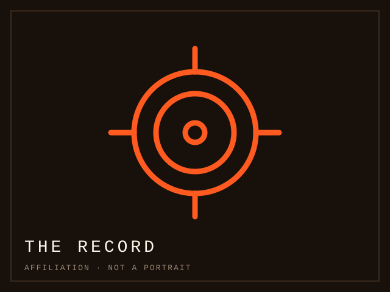

Today on this way · 1 NOV 2026 · Today's entry
The table that carried a club nobody came to
The arrangement is the object, not any participant: the division, its table and its calendar are what the entry is about, and a club that barely filled its ground survived inside it.
Read the case